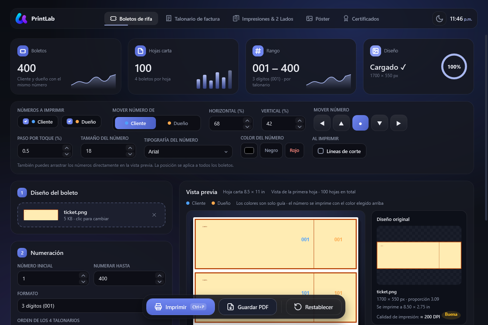

PrintLab numera tus boletos de rifa y talonarios de factura, acomoda tus diseños a 2 lados, divide imágenes grandes en varias hojas y genera cientos de certificados desde tu Excel. Rápido, ligero e imprime directo.
Descargar para Windows
4 por hoja, numerados para el cliente y el dueño, con la tipografía que elijas.
2 por hoja, lado a lado o uno arriba del otro, con folio consecutivo.
Repite tus diseños centrados en la hoja; frente y atrás por grupos, con líneas de corte.
Divide una imagen en varias hojas para armar un cartel grande.
Impresión masiva y correspondencia con Excel o CSV: un certificado por fila, en PDF o directo a la impresora.
Requisitos: Windows 10 u 11 (con .NET Framework 4.8, que ya viene incluido). Si Windows muestra «Windows protegió su PC», pulsa Más información → Ejecutar de todas formas.